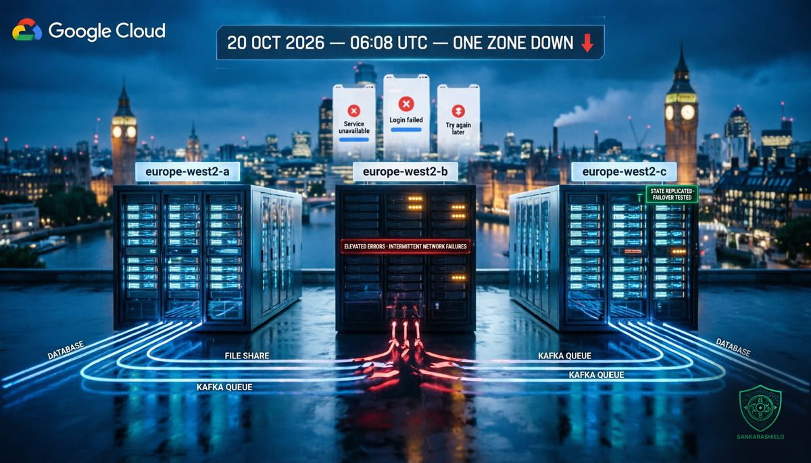

One availability zone went down. Some of Britain's biggest banks felt it.

On the morning of Tuesday 20 October, at 06:08 UTC, one of the three availability zones in Google Cloud's London region, europe-west2-b, started failing. Google later put it in one line: "Due to a power event we had suffered an outage within europe-west2-b zone."
One zone. Not the region, not the backbone, not a cyberattack. And yet by breakfast time Revolut cards were being declined, customers of several of the UK's largest banks could not reach their accounts, court hearings across England and Wales lost their video links, and parcel carriers and retailers were on Downdetector's front page.
Cloud regions are built with several zones precisely so that one of them can fail without anyone noticing. On 20 October a lot of people noticed. This article is about why.
WHAT ACTUALLY HAPPENED
Google's status page described "elevated errors and intermittent network failures" in the europe-west2 region. The products it listed as impacted included Cloud Run, Google Kubernetes Engine, App Engine, Cloud Filestore, Google Cloud NetApp Volumes, BigQuery Data Transfer Service and Managed Service for Apache Kafka.
For the first hours there was no workaround. When one finally appeared in Google's updates, it was the most honest sentence of the day: customers may migrate affected workloads to another location "if feasible."
The cause Google gave was a power event inside the zone. Some coverage adds that mains power returned quickly but backup generators failed to engage during the initial outage; Google has not yet published the detailed analysis that would confirm it. By the afternoon Google said the issue was mitigated for most customers, while "a very small number" were still affected. The Ministry of Justice said its systems were not fully restored at 15:52 local time.
The visible impact was out of all proportion to a single zone
BANKING — Downdetector reports spiked for Lloyds, HSBC, Halifax and Revolut, among others. Revolut customers reported cards not working, and the company had to reassure them that "all our customers' money and data are safe."
JUSTICE — HM Courts & Tribunals Service reported a problem with its Cloud Video Platform, used for remote hearings. Live streams of trials failed across the country.
LOGISTICS AND RETAIL — Royal Mail, DPD, Screwfix and Rightmove all appeared among the reported disruptions, along with BT.
Users on public forums also described knock-on failures at suppliers further down the chain, and several suspected DNS. That detail matters, and we will come back to it.
WHY ONE ZONE SHOULD NOT HURT THIS MUCH
An availability zone is, roughly, an independent failure domain inside a region: separate power, cooling and networking, close enough to the other zones for low-latency replication. The entire promise of a three-zone region is that losing one zone is a capacity event, not an outage.
When a single-zone failure becomes a national headline, the architecture was multi-zone on paper only. In practice, the same few patterns show up after almost every incident of this kind.
STATE PINNED TO ONE ZONE — a zonal persistent disk, a Filestore instance, a self-managed database primary or a Kafka cluster built in one zone "for now." Compute can be spread across zones in minutes. State cannot.
STATELESS, BUT NOT INDEPENDENT — containers on Cloud Run or GKE may restart happily in zone a or c, then sit there waiting for a database, a queue or a mounted volume that only ever lived in zone b. Healthy servers, dead service.
CAPACITY THAT WAS NEVER THERE — running across three zones at 70% each looks redundant until one zone disappears and the other two need to absorb 50% more load at the same moment as every other customer in the region. Autoscaling cannot create capacity that the region does not have free.
THE HIDDEN SUPPLIER — your own design may be flawless, but the payment processor, identity provider, messaging API or fraud engine you call may not be. A bank's app is only as available as the least resilient service in its critical path.
None of this is specific to Google. The same failure modes exist on AWS, Azure and in your own data centres. Google just happened to be the one that lost power on Tuesday.
THE DNS QUESTION
Why would users suspect DNS during a power failure?
Because from the outside, many partial outages look like name resolution problems. If internal DNS servers, service discovery, load balancer health checks or API gateways run in the failing zone, healthy backends elsewhere can become unreachable simply because nothing points to them any more. The application is up. Nobody can find it.
It is also the reason why monitoring hosted inside the same cloud region can stay quiet. A probe that shares the resolver, the network path and sometimes the zone of the workload it watches will fail in the same way, or not at all, at the same time. External, synthetic monitoring from another provider is the only view that resembles what customers actually see.
THE ONLY UK REGION
There is a uniquely British twist. europe-west2 is Google Cloud's only region in the United Kingdom. For organisations bound by UK data-residency requirements, contractual or regulatory, "fail over to another region" means moving data out of the country, which many cannot do without legal review.
So the real menu for a UK-resident workload was: survive inside the remaining London zones, fail over to another provider in the UK, or accept the outage. Each of those has to be designed and rehearsed long before the morning it is needed. "Migrate if feasible" is only feasible if you already know the answer to the data-residency question.
WHAT TO DO NOW
MAP ZONE AFFINITY — list every disk, file share, queue, cache and database with the zone it actually lives in, not the one in the architecture diagram, and flag anything that exists in a single zone.
CHECK YOUR HEADROOM — confirm that two zones out of three can carry your full peak load, and reserve capacity where it matters, because on the day of a zone failure everyone else in the region will be scaling too.
TEST A ZONE LOSS — drain one zone in staging during business hours and measure two numbers: how long before customers would notice, and how long until service is back without heroics.
DECIDE THE REGION QUESTION IN ADVANCE — for workloads with residency constraints, document whether you may fail over abroad or to a second provider, who signs it off, and how long it takes; do it with legal and compliance now, not on the bridge call.
AUDIT YOUR CRITICAL SUPPLIERS — ask your payment, identity, messaging and API providers which region and zones they depend on, and how they handled 20 October; their answer is part of your availability.
MONITOR FROM OUTSIDE — add synthetic checks from another provider and another network that test the full customer journey, including DNS resolution, so you learn about an outage from your alerts and not from social media.
WHAT TO READ WITH CARE
The start time, the affected zone, the product list and the "power event" statement come from Google's status updates as reported by The Register and ABC News. The claim that backup generators failed to engage comes from secondary coverage and has not been confirmed in a published Google analysis; Google has said it will publish one after its internal investigation. The lists of affected banks and companies are based largely on Downdetector reports and press coverage, which show user complaints, not confirmed root causes, and some of those organisations may have been hit indirectly through suppliers. Recovery times vary between sources depending on whether they measure the power fix or the return of the last customer workloads.
THE UNCOMFORTABLE PART
The cloud did what it promised. One zone failed, and the other two kept running. What failed on 20 October was the assumption, repeated in countless architecture reviews, that deploying "in a region" means being resilient to the loss of a zone.
Resilience is not a property you buy with a region. It is a property you prove by turning a zone off and watching what breaks. Most organisations have never done that test. On Tuesday, a power event did it for them.
Redundancy you have never failed over is a hypothesis, not a control.
So ask it now, before the next power event asks it for you: if your primary zone disappeared at 06:08 tomorrow, how long before you would know, and who would decide to move?